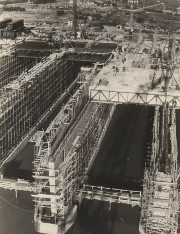
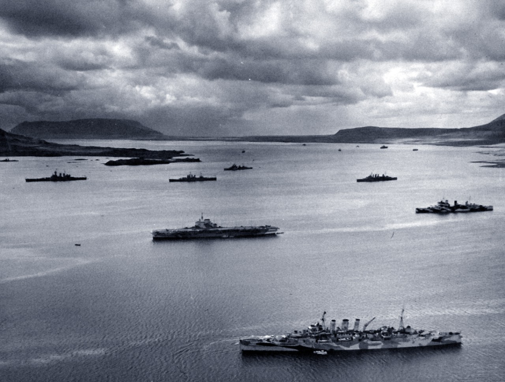

A Brief History of The Battle of the Atlantic and Convoy System
The Battle of the Atlantic was the single longest campaign of the war, lasting from September 3rd
1939 to May 8th 1945. Often overlooked in its importance, this naval campaign keep the Atlantic corridor open, connecting the
Americas with Europe and North Africa. A life line of lend-lease aid which supplemented the war torn economies of the United Kingdom
France, the Soviet Union, and other countries. If Germany was capable of controlling the Atlantic sea lanes, they could sever this
connection and threaten the Allies's ability to contain waging war. Such was the importance of the battle, Churchill considered it
“The only thing that ever really frightened [him] during the war was the U-boat peril” (Churchill 1949, 529). Had Germany's U-boats
taken control of the seas, Hitler would have starved Britain into submission, bleed the Soviet Union dry of raw materials and
supplemental goods, and thwarted any hopes an Allied invasion onto mainland Europe. Thus was the importance of convoys in ensuring
troops and goods made it safely across the ocean.
As the battle spanned the length of the whole war, it can be broken down into seven periods. Each of which is characterized by
the location of focus, deployment of new tactics, and the overall effectiveness of the U-boats.
Period I (September 1939 - May 1940): This period of World War Two is often referred to the "Phoney War" for the
lack of Allied military engagements which is again reflected in the Atlantic. The limited number of German U-boats, based in Germany,
operated only around the British Isles. Additionally, it would not be until December 1939 and War Order No. 154 that Germany would
engage in unrestricted submarine warfare. Much of the earlier focus on the German side was mine laying, often which done by U-boats.
For the Royal Navy, their initial focus was enforcing a naval blockade over Germany and reviving the convoy system from WWI. Limited
offensive measures were taken by the Royal Navy against U-boats during this period. The U-boats small silhouette and a lack of
effective weapons and tactics left the U-boats relatively free from attacks. U-boats that did attack ships focused on independent
merchant ships during day time attacks. During these initial engagements and the concurrent Norwegian Campaign, flaws were identified
in U-boat torpedoes and tactics. Furthermore, the full strength strategy that was present in the very beginning of the war was
unsustainable and U-boat production not viewed as a priority by Nazi leadership.
Period II (June 1940 - March 1941): With the fall of France in June, the Battle of the Atlantic entered a new phase.
Gone was the French Navy, the fourth largest in the world and forced the Royal Navy to stretch its force even thinner. Construction
of U-boat bases in France began, reducing the travel to the Atlantic from German bases in the North Sea by about 450 miles (U-boats were
forced to travel around the British Isles instead of the Britain Channel). The fall of Western Europe also meant the full U-boat force
could be directed against the United Kingdom and the royal Navy. This era became known as the "Happy Time" to U-boat crews as they faced
relatively uncontested success. The main location of attacks was the western approach to Great Britain. U-boat tactics also evolved seeing
crews spread out to cover this vast approach to better spot convoys and independent ships. Once a target was spotted, other U-boats were
notified and assembled into packs to attack often now at night. What would become known as "wolf packs" groups of U-boats attacking proved extremely deadly
as the Royal Navy and merchant shipping suffered some its worst losses in September and October 1940. In addition to the U-boats, German
Luftwaffe planes operating from France and Kriegsmarine coastal raiders continued to threaten shipping.

Period III (April 1941 - December 1941): The disastrous losses from the months prior forced the Royal Navy to reintroduce
Atlantic convoys, a legacy of the First World War. The first convoys were formed during the approach to Europe as that was the region in which U-boats
operated leading to initial successes in defending wolf pack attacks. Increased U-boat losses forced the Kriegsmarine to push its U-boats further
west to before convoys would form. June 1941 saw to introduction of full escort support meaning convoys would be protected for the entire
length of the Atlantic journey. Thanks in part largely to ex-American destroyers (from the destroyers for bases agreement) and Canadian built
escorts which became available during this period. During this period the United States began taking a more active role despite its neutrality
extending the Pan-American Security Zone to just short of Iceland. In this zone American warships escorted convoys which worked to prevent
U-boat attacks in fear of giving cause to a declaration of war. However the extension of this zone created hostile encounters between U-boats
and American warships prior to America's formal entry into WWII. Additionally, this period was marked by rapid expansion of the U-boat force
creating issues with crew training and effectiveness, though these issues diminished over time as crews gained more experience at sea. Despite
more successes in defending U-boat attacks, few U-boats were being sunk creating a temporary solution to the Allie's problem.

Period IV (January 1942 - September 1942): Adolf Hitler's declaration of war against the United States the end of 1941
changed the scope of the U-boat campaign. It now encompassed majority of the Atlantic Ocean bringing the war the American shore.
The Kriegsmarine, despite having only five long range Type IX U-boats at first, quickly began attacks off the American East Coast.
The United States naval command initially rejected the Royal Navy's calls for coastal blackouts and East Coast convoys. The lack of blackouts
and warship protection allowed for U-boats to easily spot merchant ships off the silhouette of city lights without fears of retaliation.
Heavy shipping losses followed lending to criticism of the Navy but Navy argued it was the Army who had the legal authority to enforce
city blackouts and that its available surface fleet was prioritized to protecting troop transports and lend-lease to the USSR or was in
the Pacific. By May, however, more available escort ships allowed for convoys to be implemented along the Eastern Seaboard and the first
U-boat sinkings off American shores. U-boats reacted by pushing further into the Western Hemisphere to the Caribbean and Gulf of Mexico
where merchant ships would not be sailing in convoys yet. As U-boat losses mounted, the Kriegsmarine pulled its submarines off the East Coast
by summer returning the battle to the Mid-Atlantic. The vast distances and lack of resupply bases made East Coast patrols difficult and largely
unsustainable for U-boats despite their initial success against an unprepared America.
Period V (October 1942 - June 1943): Returning to the Mid-Atlantic, U-boats focused their attacks in the "air gap", the
region of the Atlantic outside the range of allied aircraft flying from bases in North America or the United Kingdom. Additionally, U-boats
returned to "wolf pack" attacks often with 10-15 submarines all attacking one convoy. This large number of U-boats at sea combined with the
volume of convoys transiting the Atlantic meant spotting convoys was frequent. U-boats would search for and then tail convoys during the
day, waiting until night to launch attacks. These tactics aimed to overwhelm the escort ships and exploit vulnerabilities in the convoy. Tactics,
which were highly effective at first, particularly, March 1943 where 82 ships sunk in the Atlantic. However, as merchant
shipping losses mounted during the period, the United State's ship building industry came into full force producing roughly 100 liberty ships
a month in 1943. U-boat
losses, though, continued to increase threatening their value of tonnage sunk per U-boat loss. Moreover, the ever increasing number of escort
ships shifted allied strategy allowing for more offensive tactics. Support groups were formed with convoys that could break away during attacks
to hunt and drive U-boats away while leaving enough escorts remaining with the convoy. While hunting U-boats down, Allied ships developed the
"hold-down" tactic were ships would simply patrol or follow submerged submarines until they were forced to surface for air or to recharge batteries.
Advancements in technology saw better sonar and radar, cracking the Enigma code, and the introduction of new weapons like the Hedgehog mortar
launcher furthered the Allies' offensive capabilities. Finally, it was the introduction of longer range aircraft and escort carriers
capable of launching planes at sea which closed the air gap and forced U-boats to abandon the Mid-Atlantic and head back to European coastal attacks.
Period VI (July 1943 - May 1944): Operations in the North Atlantic became increasingly dangerous for U-boats since they had gone from
hunter to the prey. Aircraft proved to be highly effective against the U-boats especially since U-boats lacked significant air defense weapons. This
forced U-boats to seemingly less protected regions in the Central and Southern Atlantic. With Italy's surrender in September 1943, the Royal Navy
was able to free up destroyers from the Mediterranean to bolster Atlantic defenses. Later in September, leader of the Kriegsmarine, Karl Dönitz,
attempted to surprise the Allies with wolf pack attacks into the North Atlantic. Although, the U-Boats saw initial success, later wolf pack attacks
saw considerable losses and lead the end of such styles of attack. From this point on, U-boats were once again dispearsed. U-boat losses had now
reached levels below the rate of new U-boat production and the intensfying air campaign against German industry only made this issue worsen.
New U-boat variants like the hydrogen peroxide powered Elektroboote, were in production but suffered delays and over promises in capabilities. It
was not until April 1944 was the first of new Type XXI U-boat launched, however, nominal technological advancements and low productions meant it had
little to affect on the stopping allied shipping. As an Allied invasion loomed, U-boats increasing operated around mainland Europe as Germany hoped to
preserve its fleet. By May 1944, only 10 or so U-Boats were operating in the Atlantic. What was once posed an existential threat to the Allies' hope of victory
had been reduced to a mere nuisance in Allied logistics.
Period VII (June 1944 - May 1945): The invasion of Normandy saw all U-boats recalled from the Atlantic. Their tactics switched to solely
defensive as the Germans feverously attempted to stop the inevtatible. All remaining U-Boats were sent to confront the invasion force resulting in sinking of
8 of the some 5000 ships partaking in the Normandy landings for the loss of 13 U-boats. Constant air patrols meant U-boats could no longer travel on the
surface restricting speed and rendering any U-boats without a schnorkel (German for snorkel) useless. As the Allied armies pushed through France, the U-boat
bases themselves were threatened. The major bases at Brest and Bordeaux were lost in August-September and pushed any remaining U-boats up to Norway. Notably,
the other French U-boat bases remained occupied by the Germans until the end of the war but had their U-boats evacuated. The Allies's main priority was breaking
out of France towards Germany so a "bypass and contain" strategy was adopted for German holdouts in order to limited casualties speed up advancements. The few
remaining U-boats in Norway were too far from Allied convoy lanes which meant their attacks were limited to the English waters. Some expeditions to American
and Canadian waters were launched and saw limited success but far from enough to make any tactical differences. As the Red Army began to overrun Baltic U-boat
bases, the remaining submarines also fled to Norway but at the great loss of Allied air attacks. The U-boat force, as with much of the German armed forces, had
been reduced to a state of disarray. The last engagement of the Battle of the Atlantic took place on May 7th-8th which saw U-320 sunk by the British Royal Air Force.
The surrender of Germany on May 8th marked the end of the Battle of the Atlantic. What was the war's longest campaign had resulted in an overwhelming Allied
victory, largely in part to rapid technological advancements and the USA's ability to mass produce commercial and military ships. Any remaining U-boats were
either scuttled by their crews or feel into Allied hands. The Atlantic was once and for all free from the underwater threat.